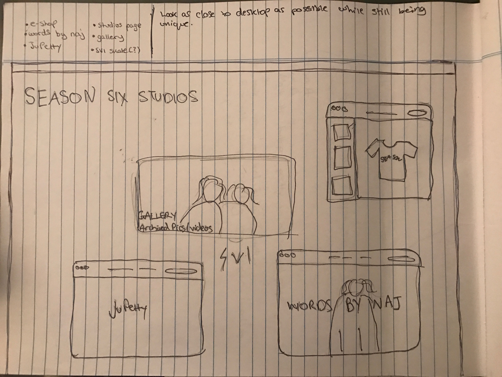

Throughout my undergrad experience at college I was always on my phone. Always documenting what was going on with me and my friends. So naturally they would always want to see the pictures but I didn’t use Flickr or anything at the time so they lived on my laptop, along with all the party videos. They must have asked to see my computer at least twice a day, so, I thought to myself . . . why not put my computer online for them? But not just a simple upload to a Dropbox. More like creating a website that looks like my desktop itself. Give them the whole experience so that way they can use it whenever I was not around.
The whole site was to look like my desktop except with a few changes, such as the configuration of the top bar. Starting off with some sketches I came up with an idea of how I wanted it to look and how I wanted the user to interact with it. I kept the look relatively simple while using images from my own desktop and screenshots to create the experience for them.

This project involved a lot of javascript to make the elements on the page function like they would on the desktop. Including the ability to drag and resize some of the windows.
Although it is still a work in development, the site can be viewed here: